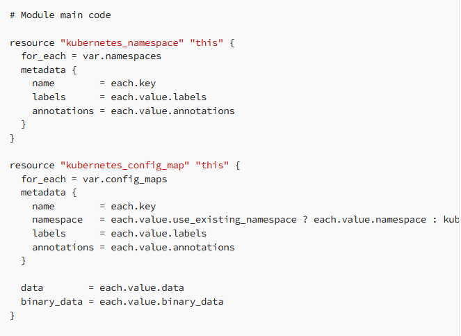

Minimal module structure
A typical module should contain the following files:
- main.tf: Contains the core resource declarations and configurations for the module.
- variables.tf: Defines input variables that allow users to customize the module's behavior.
- outputs.tf: Specifies output values that the module returns to the caller, providing information about the created resources.
- README.md: Offers documentation on how to use the module, including descriptions of input variables and outputs.
What I also like to do, when I’m building modules, is to create examples for those modules.
So in each module, what I typically do, is create an examples folder in which I define at least a main.tf in which I create an object for that module.
For the Readme file, I usually leverage terraform-docs to get the documentation automated, but nevertheless, I also explain what the module does, how to leverage the examples and deep dive into why I took some decisions related to the code.
Module Example
Let’s create a simple module for generating config maps in Kubernetes.


The above module code will create how many namespaces and config maps you want in your Kubernetes cluster. You can even create your config maps in existing namespaces, as you are not required to create namespaces if you don’t want to


In order to build reusable Terraform modules that can be easily leveraged to achieve almost any architecture, I believe that at least the following best practices should be put in place:
- Each Terraform module should exist in its own repository
- Use for_each and map variables
- Use dynamic blocks
- Use ternary operators and take advantage of terraform built-in functions, especially lookup, merge, try, can
- Build outputs
- Optional: Use pre-commit
When using modules installed from a module registry, we recommend explicitly constraining the acceptable version numbers to avoid unexpected or unwanted changes.
Use the version argument in the module block to specify versions:
module "consul" {
source = "hashicorp/consul/aws"
version = "0.0.5"
servers = 3
}